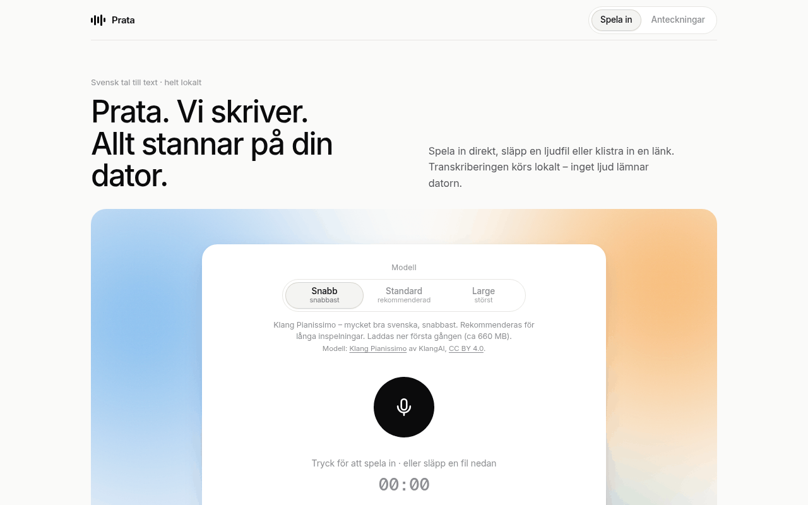

Prata – gratis svensk tal till text, offline
Spela in eller släpp en ljudfil och få en text med tidsstämplar – för intervjuer, möten och föreläsningar. Allt körs på din egen Mac eller Linux-dator; inget ljud lämnar den.
Installera
npx prata-app@latestKräver Node.js 18+ och ffmpeg (brew install node ffmpeg på Mac, sudo apt install nodejs npm ffmpeg på Ubuntu/Debian). Kommandot laddar ner Prata, startar den och öppnar webbläsaren. Mer: installationsguiden.

Det här får du
- Helt lokalt och gratis. Öppen källkod (MIT), inget konto, ingen molntjänst, ingen telemetri.
- Tre modeller för svenska – välj mellan fart och precision:
| I appen | Modell | 12,5 min inspelning, Mac mini M4 | WER |
|---|---|---|---|
| Snabb | Klang Pianissimo (KlangAI) | 23,8 s | 5,3 % |
| Standard | KB-Whisper small (KBLab) | 133,1 s | 4,3 % |
| Large | KB-Whisper large (KBLab) | ej mätt (2,5 min: 119,5 s) | 4,6 % |
- Ordlista för namn och facktermer: ange rätt stavning och de felstavningar som brukar dyka upp, så rättas nya transkriptioner automatiskt.
- Kö för flera filer: släpp flera ljudfiler på en gång, avbryt ett pågående jobb, försök igen eller ta bort.
- Säker inspelning: inspelningen sparas löpande i webbläsaren, och efter en krasch eller omladdning tar Återställ inspelning tillbaka den. En vakt varnar om mikrofonen inte hör något.
- Alla ljud- och videoformat som ffmpeg läser, och länkar till YouTube, SVT Play och poddar (med yt-dlp).
- Export till .txt, .txt med tidsstämplar, .srt (undertexter) och .json. Alla transkriptioner sparas som anteckningar med sökning.
Vanliga frågor
Är Prata gratis?
Ja. Prata är gratis och öppen källkod under MIT-licensen. Det finns ingen betalversion, inget konto och ingen tidsgräns.
Lämnar ljudet datorn?
Nej. Ljudet transkriberas på din egen dator. Nätet används bara för att ladda ner appen och modellerna första gången, och för länkar som du själv klistrar in. Det finns ingen telemetri.
Fungerar Prata offline?
Ja. När appen och modellen är nedladdade fungerar transkriberingen utan internet.
Vilka datorer fungerar Prata på?
Mac med Apple Silicon eller Intel (Snabb finns inte på Intel) och Linux x64 med glibc 2.39 eller senare, till exempel Ubuntu 24.04. Du behöver Node.js 18+ och ffmpeg. Från iPhone når du Prata på en Mac via Tailscale.
Hur exakt är Prata?
På en svensk inspelning på 12,5 minuter var ordfelsfrekvensen (WER) 5,3 % med Snabb, 4,3 % med Standard och 4,6 % med Large. Metod och fler siffror: benchmarks.
Hur skiljer sig Prata från MacWhisper?
Prata är gratis med öppen källkod, gjord för svenska med KB-Whisper och Klang Pianissimo inbyggt, körs i webbläsaren och fungerar även på Linux. MacWhisper är en Mac-app för många språk med fler funktioner, som talarigenkänning och mötesinspelning, och en betald Pro-version. Se jämförelsen med MacWhisper, Sagt, Aloud och Transkribera (med källor).